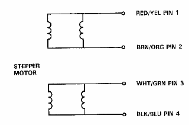
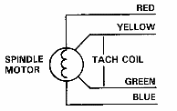
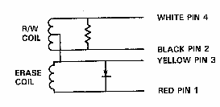

|  | 37 OHMS PIN 1 TO PIN 2 37 OHMS PIN 3 TO PIN 4 |
|  | MOTOR COIL = 137 OHMS TACH COIL = 177 OHMS AT REST TACH COIL = 160-195 OHMS IN MOTION |
|  | R/W END TO END = 23 OHMS R/W END TO CENTERTAP = 11 OHMS ERASE COIL END TO END = 1.07 OHMS |
| ALL MEASUREMENTS MADE AT THE APPROPRIATE CONNECTION WHEN DISCONNECTED FROM THE ANALOG PCB. | |
| This page has been created by Sami Rautiainen. | |
| Read the small print. | Last updated June 07, 1998. |